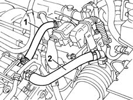

Specifications
- Path
- Descriptions > 10 ENGINE > 1080 EMISSION CONTROL SYSTEM > 1080D CRANKCASE VAPOUR/GAS RECIRCULATION SYSTEM > Specifications
- Kind
- system description
- Applies to
- engines: 2.4 20V; all production periods
- Interactive page
- https://sloeber94.github.io/elrnDB-lThss/en/#/610017
Applies to: engines: 2.4 20V; all production periods
FUNCTION.
During engine operation, oil vapour from the crankcase collects in the cylinder head.
A proportion of the oil vapour condenses and falls into the crankcase. The remaining vapour is directed to the intake through pipes (1) and (2).
When the engine is idling, oil vapours flow to the intake through pipe (1). At higher loads, they flow through pipe (2).
